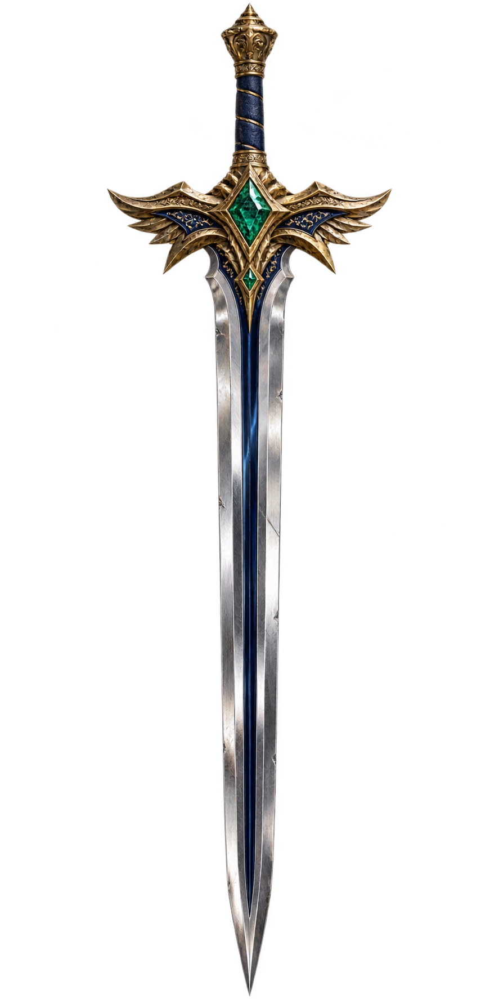
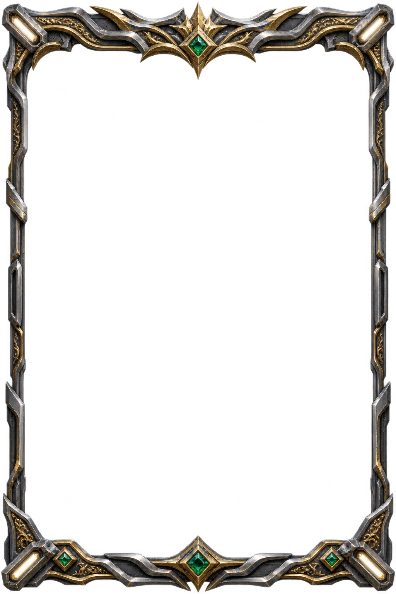
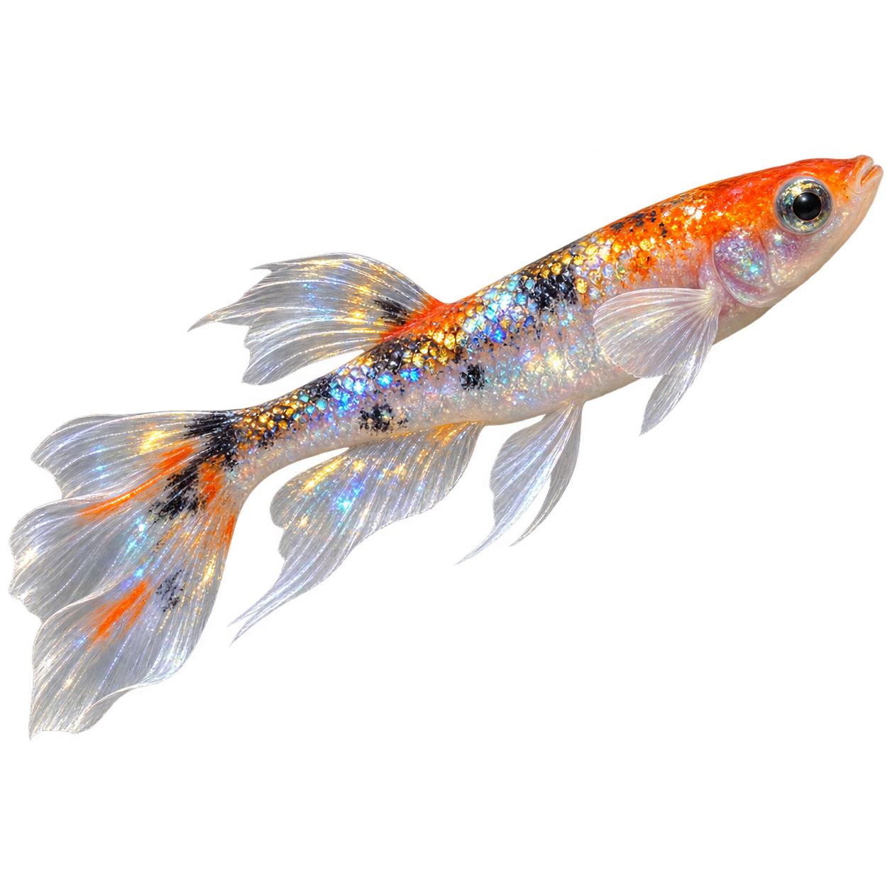

BANSHU MEDAKA
BANSHU MEDAKA 極彩降臨MEDAKA GACHA
極彩降臨MEDAKA GACHA

極彩降臨SWORD CHALLENGE
SPECIAL MEDAKASS RANK

極 彩 降 臨
SSランク景品（仮）
景品未登録・画像は演出用イメージ剣の演出
飛び交うカード。緑、赤、金の雷。
一撃で、運命を切り開く。
約20秒 · 演出確認用サンプル
メダカガチャへ戻る

運命を、解き放て。タップで突破 · 操作なしでも進みます
NEXT EPISODE次回予告極彩、覚醒。この一撃が、運命を変える。